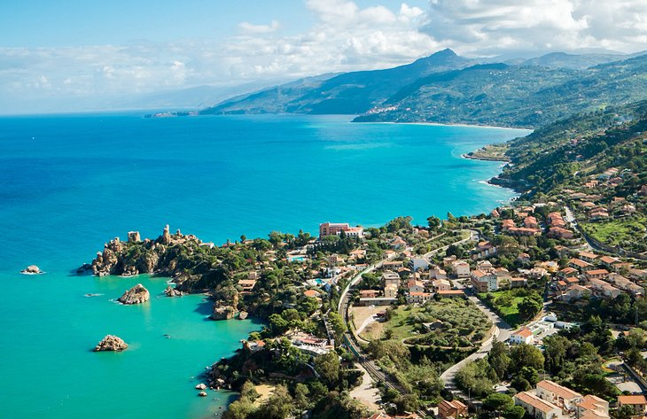

Sicily is the largest of the Italian islands,
separated from the Continent
by the Strait of Messina and surrounded by the Ionian,
the Tyrrhenian and the Mediterranean Seas.
It is one of the pearls of Southern Italy and can be discovered,
understood and experienced through a series of itineraries
dedicated to areas of interest ranging
from nature to history and traditions.
Must-Visit spots:
Palermo
Cefalu
Nebrodi Mountains
Agrigento
Taormina
Mount Etna
Ugne Meskuotyte